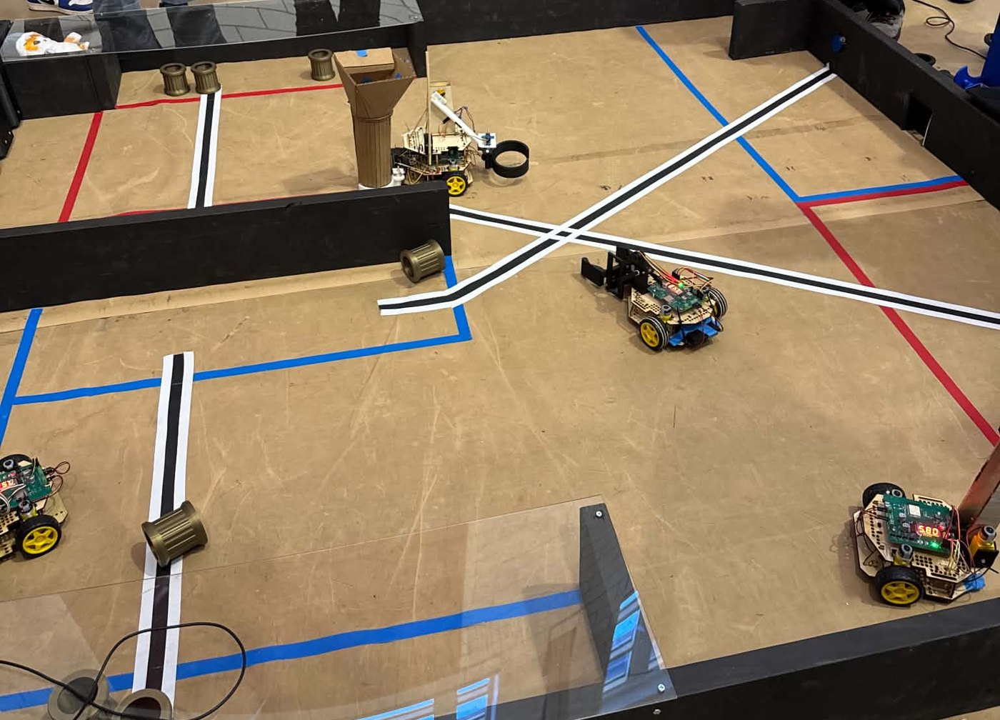
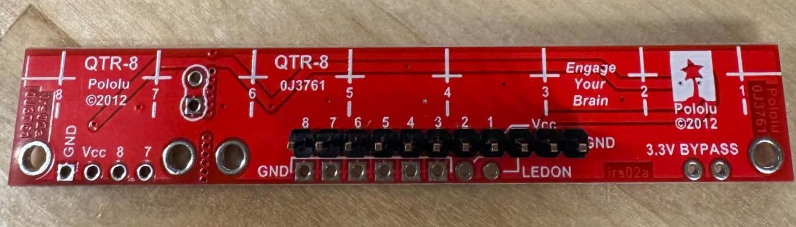

Overview
Red Robot is a three-day hardware hackathon run by the CMU Robotics Club, where teams of five turn a starter-kit robot into a competition machine with their own mechanisms, electronics and code. The game is kept secret until kickoff. Our team built a small UMI-style gripper and lift so the robot car could pick up pipes and stack them. Two hobby servos drive it, one to open and close the jaws and one to raise and lower the arm.


The game
This year's game was set in Andrew Carnegie's Pittsburgh. Two alliances of two robots each score 3 in flanged steel pipes, dropping them sideways into a trench for 10 points each or standing them upright as smokestacks in a steam plant, where each pipe higher up the stack is worth more, from 20 points at the bottom to 60 points from the third level up. Pressing a button dispenses new pipes, and pulling a lever in the endgame adds 30 points. Each match lasts 2 minutes 20 seconds: 20 seconds autonomous, then 120 seconds driven by remote control. Robots ran on 6 AA batteries with up to 4 servos, and every 3D print had to stay under 100 g and 2.5 hours, so the whole mechanism came in at about 83 g of PLA.

Gripper and lift
Two V-shaped jaws ride on dovetail slides and are driven together by a 12-tooth gear on the servo, opening from 27.7 to 137 mm with an end stop so they can't run off their slides. The jaw tips have a round nose so the pipe slides into the V instead of catching. The lift is a parallelogram linkage with 65 mm links, so the gripper stays level while it rises 92 mm over 90° of servo rotation.


Keeping the car upright
With the gripper reaching well ahead of the front caster, the car tipped forward easily, and the top plate could lift off its tabs. A rear ballast box and two plate pillars fix both, bolting through existing holes. A tipping estimate showed that about 150 g of ballast raises the braking needed to tip the car with a 50 g pipe from 0.21 g to 0.47 g.

Simulation
The CAD is fully parametric in CadQuery, with an interference sweep over jaw gaps and lift angles. A MuJoCo model built from the same CAD accepts the same command packets as the car's ESP32 board. In the stacking demo the car drives while the arm moves, cancelling the forward swing of the linkage so the pipe goes almost straight up and down, and it lands 0.2 mm off centre.

Autonomous line following
For the 20-second autonomous period we used a Pololu QTR-8 array, a row of eight IR reflectance sensors, to follow the black tape lines on the field. The lines run from the starting zone to each team's button zone and the trench, and following them earns autonomous bonus points.
